Electrical Power System (EPS) for Nanosatellites
The Nanosatellite Electrical Power System (EPS) is a miniaturized power management unit designed to harness, store, and distribute energy in space environments. Developed as a pedagogical and scalable prototype, it integrates Maximum Power Point Tracking (MPPT) and stabilized voltage regulation.
Abstract
This project report covers the design, simulation, and demonstration of a prototype Design of an Electrical Power System (EPS) suitable for nanosatellite application. The primary objective was to build a small, cheap, uniform system to absorb solar energy, charge the battery efficiently, and distribute controlled power to onboard subsystems. The EPS features a photovoltaic panel, 2S2P Lithium-Ion battery pack, and MPPT control. Major findings verify the viability of the integrated solution with room for future potential in space-grade component integration.
1. Introduction
1.1 Preamble
The Electrical Power System (EPS) is an important subsystem in every satellite used to generate, store, control, and distribute electrical power. In the case of nano-satellites, where size and weight are of utmost importance, the design of an effective and robust EPS is a difficult exercise.
1.2 Motivation
With the enhanced need for reduced-weight space missions, nanosatellites are subject to rigorous size, weight, and power (SWaP) constraints. This project seeks to design such a system with the inclusion of MPPT for the best possible solar power harvesting and Lithium-Ion batteries for assured storage.
1.3 Problem Statement
The design of an optimized EPS for nanosatellites is a multidimensional challenge:
- Limited surface area for solar panels in orbital environments.
- On-board systems demand several levels of voltage (3.3V, 5V) to function.
- Requirement for space-efficient power distribution units tolerant of faults.
1.4 Block Diagram
Figure 1.1: General Block Diagram showing the flow from Solar Panels to the Subsystems.
2. Literature Review
Maximum Power Point Trackers (MPPT) techniques have garnered broad research to maximize solar panel power extraction. According to J. Lee et al. [5], Perturb & Observe (P&O) is an effective performer in obtaining the highest energy yield in the face of light dynamic changes.
2.2 Summary of Literature Review
| EPS Aspect | Common Approaches | Identified Gaps |
|---|---|---|
| Power Generation | Solar panels with MPPT logic. | Predominantly theoretical analysis. |
| Energy Storage | Lithium-ion batteries and BMS. | Need for replicable battery designs. |
| Power Regulation | Buck/Boost converters. | Few holistic designs integrate all stages. |
3. Present Work Carried Out
3.1.1 Solar Panel Array
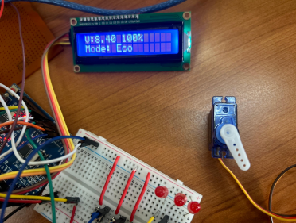
The array achieved a confirmed peak power output of around 13–14 Watts. This capacity is essential for charging the energy accumulator while meeting onboard system demands.
3.1.2 MPPT Module
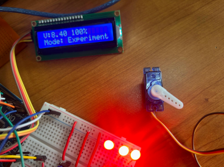
To maximize energy, an MPPT module is integrated. It utilizes an adjustable voltage buck converter stage driven by an onboard microcontroller running the P&O algorithm.
3.1.3 Battery Charging Module
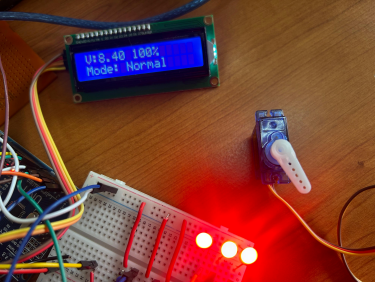
A dedicated module ensures safe charging of the pack, protecting it from potentially damaging conditions like over-discharge or thermal runaway.
3.1.4 Lithium-Ion Battery Pack
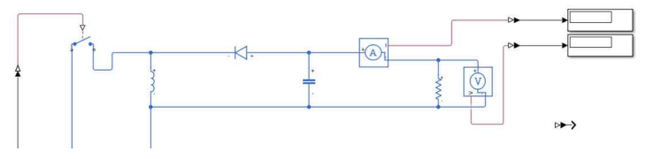
For this prototype, the pack is configured as a 2S2P (2 cells in series, 2 sets in parallel), resulting in a nominal voltage of 7.4V and a maximum charge voltage of 8.4V.
3.1.5 Voltage Regulators
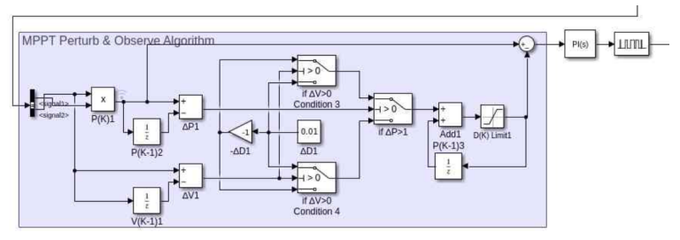
To meet specific voltage requirements, dedicated regulators are employed downstream from the converter and the battery pack.
3.1.6 Arduino Uno (Microcontroller)
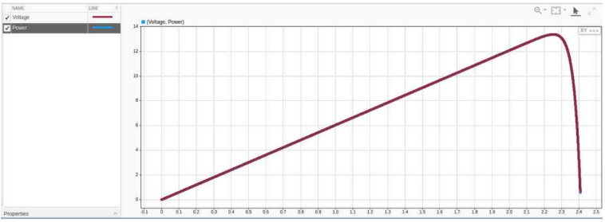
A key feature integrated is a real-time monitoring system built around an Arduino-compatible board and a 16x2 LCD module.
3.2 Software Requirements
The selection of software was guided by engineering workflows in power electronics:
- MATLAB/Simulink: Modeling I-V and P-V characteristics of the solar array.
- Proteus: Detailed circuit-level simulation and visual verification.
- Arduino IDE: Programming embedded control and monitoring functionalities.
- MS Excel / Google Sheets: Power budgeting and logging experimental data.
4. Results and Discussions
4.1.1 I-V and P-V Characteristics
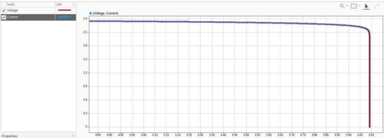
Figure 4.1: Simulink simulated circuit for the proposed EPS system.
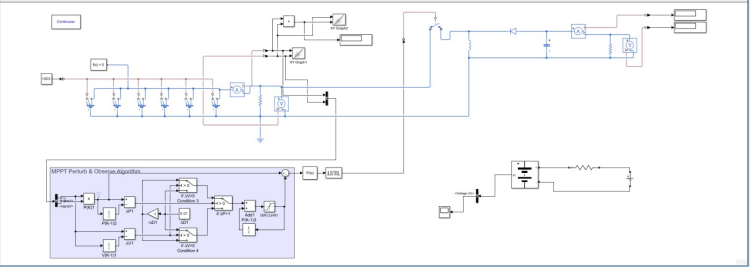
Figure 4.3: Simulated I-V Curve.
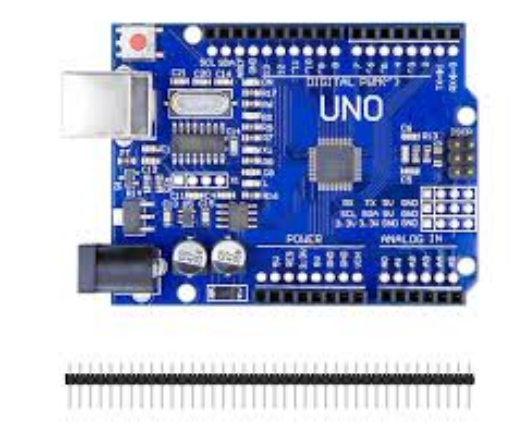
Figure 4.4: Simulated P-V Curve.
4.1.3 Buck-Boost Converter Design Math
Key design equations for a buck-boost converter in Continuous Conduction Mode (CCM):
For Vout = 12V and Vin = 2.41V, D ≈ 0.8327 (83.27%)
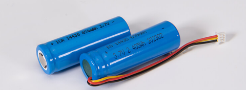
The simulated system demonstrated high efficiency (85-90%) across both buck and boost modes of operation.
4.2 Hardware Demo: Operational Modes
The system is designed to operate in three modes: Normal, Experimental, and Eco.
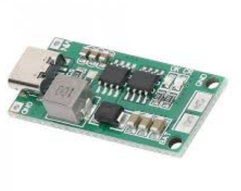
Fig 4.7: Normal Mode
LCD 8.4V (Standby)
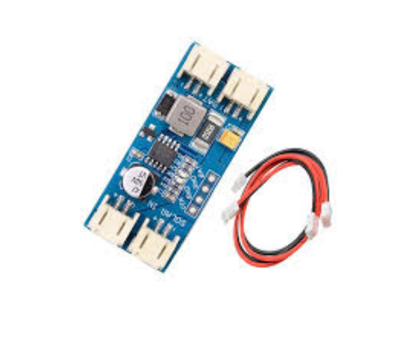
Fig 4.8: Experimental Mode
Full workload active
Fig 4.9: Eco Mode
Battery preservation
5. Conclusion
This project successfully undertook the comprehensive design, rigorous simulation, and practical demonstration of an EPS tailored for nanosatellite applications. The primary objective was to develop an efficient system capable of generating, storing, and controlling electrical power.
5.2.1 Advantages
- Efficient Energy Harvesting via P&O MPPT logic.
- Stable Voltage Regulation for sensitive electronic subsystems.
- Real-Time Monitoring via 16x2 LCD module for hardware diagnostics.
5.2.2 Limitations
6. Future Scope
Future iterations could incorporate radio modules for telemetry, advanced MPPT algorithms (Fuzzy Logic), and hybrid storage solutions like supercapacitors to manage peak power demands.
References
[1] P. Rossoni, "Developments in Nano-Satellite Structural Subsystem Design," 1999.
[2] A. Edpuganti et al., "Comparison of Peak Power Tracking Based EPS Architectures," 2021.
[3] M. Chaturvedi, S. K. Singh, "Modeling of buck-boost converter for optimization," 2013.
[4] S. Ghosh and S. K. Saha, "Modelling and simulation of photovoltaic module," 2016.